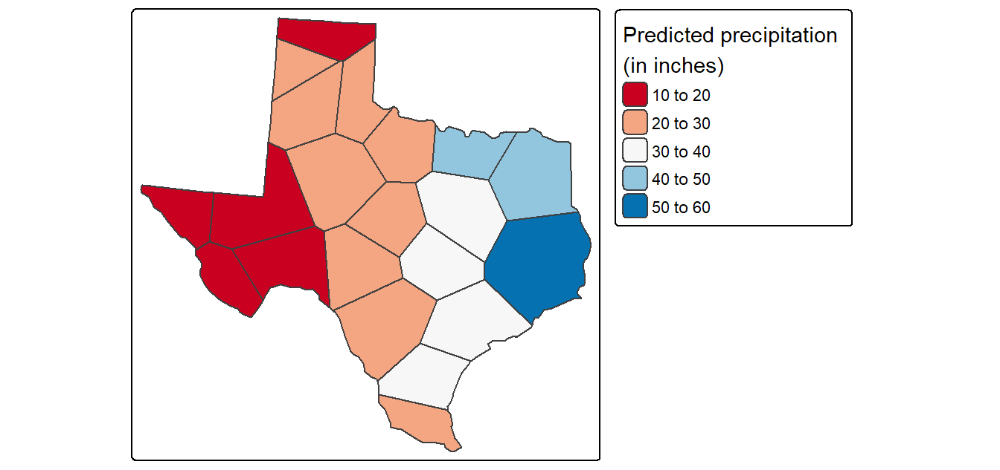
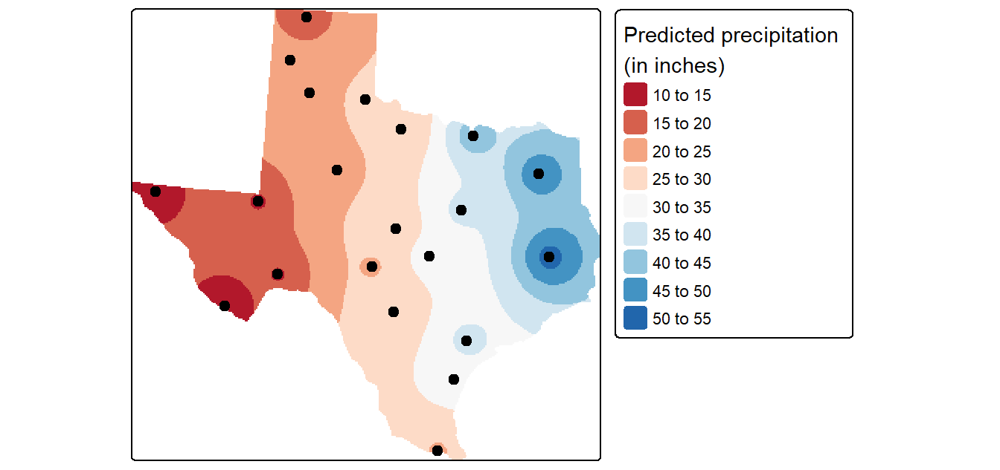
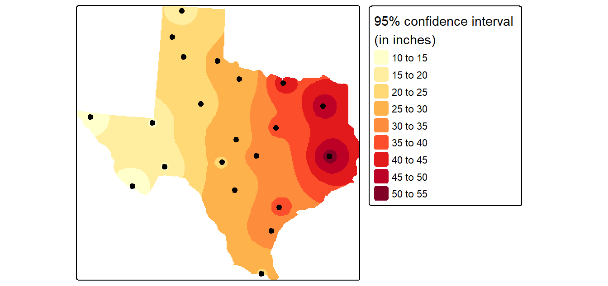
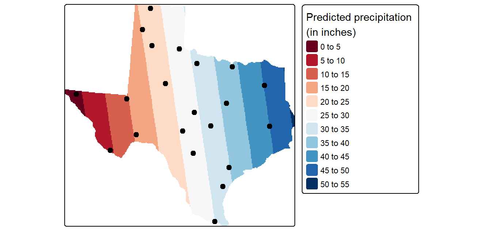
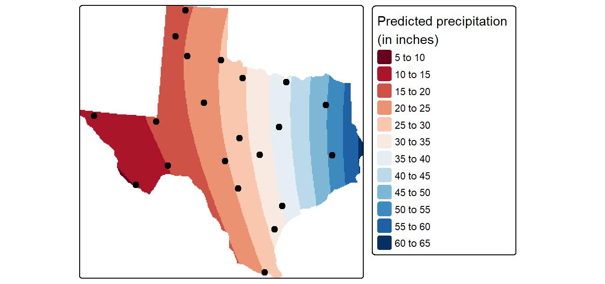
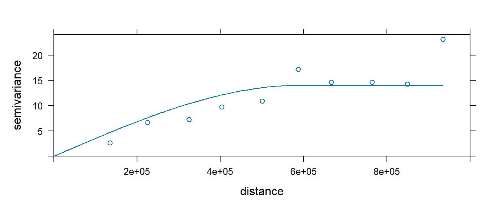
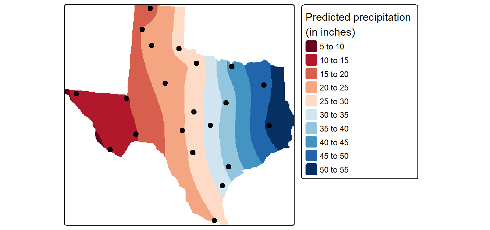
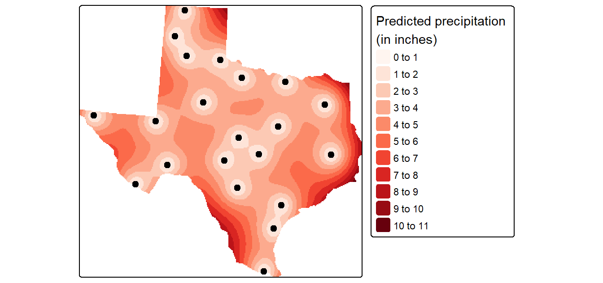

J Interpolation in R
| R | sf | tmap | spatstat | gstat | terra | sp |
| 4.3.2 | 1.0.14 | 3.3.4 | 3.0.7 | 2.1.1 | 1.7.55 | 2.1.1 |
First, let’s load the data from the website. The data are vector layers stored as sf objects.
library(sf)
library(tmap)
# Load precipitation data
z <- gzcon(url("https://github.com/mgimond/Spatial/raw/main/Data/precip.rds"))
P <- readRDS(z)
p <- st_as_sf(P)
# Load Texas boudary map
z <- gzcon(url("https://github.com/mgimond/Spatial/raw/main/Data/texas.rds"))
W <- readRDS(z)
w <- st_as_sf(W)
# # Replace point boundary extent with that of Texas
tm_shape(w) + tm_polygons() +
tm_shape(p) +
tm_dots(col="Precip_in", palette = "RdBu", auto.palette.mapping = FALSE,
title="Sampled precipitation \n(in inches)", size=0.7) +
tm_text("Precip_in", just="left", xmod=.5, size = 0.7) +
tm_legend(legend.outside=TRUE)The p point layer defines the sampled precipitation values. These points will be used to predict values at unsampled locations.
The w polygon layer defines the boundary of Texas. This will be the extent for which we will interpolate precipitation data.
Thiessen polygons
The Thiessen polygons (or proximity interpolation) can be created using spatstat’s dirichlet function. Note that this function will require that the input point layer be converted to a spatstat ppp object–hence the use of the inline as.ppp(P) syntax in the following code chunk.
library(spatstat) # Used for the dirichlet tessellation function
# Create a tessellated surface
th <- dirichlet(as.ppp(p)) |> st_as_sfc() |> st_as_sf()
# The dirichlet function does not carry over projection information
# requiring that this information be added manually
st_crs(th) <- st_crs(p)
# The tessellated surface does not store attribute information
# from the point data layer. We'll join the point attributes to the polygons
th2 <- st_join(th, p, fn=mean)
# Finally, we'll clip the tessellated surface to the Texas boundaries
th.clp <- st_intersection(th2, w)
# Map the data
tm_shape(th.clp) +
tm_polygons(col="Precip_in", palette="RdBu",
title="Predicted precipitation \n(in inches)") +
tm_legend(legend.outside=TRUE)
IDW
Unlike the Thiessen method shown in the previous section, the IDW interpolation will output a raster. This requires that we first create an empty raster grid, then interpolate the precipitation values to each unsampled grid cell. An IDW power value of 2 (idp=2.0) will be used in this example.
Many packages share the same function names. This can be a problem
when these packages are loaded in a same R session. For example, the
idw function is available in both
spatstat.explore and gstat. Here, we make use
of gstat’s idw function. This requires that we
either detach the spatstat.explore package (this package
was automatically installed when we installed spatstat) or
that we explicitly identify the package by typing
gstat::idw. Here, we opted for the former approach.
detach("package:spatstat.explore", unload = TRUE, force=TRUE)
library(gstat)
library(terra)
library(sp)
# Create an empty grid where n is the total number of cells
grd <- as.data.frame(spsample(P, "regular", n=50000))
names(grd) <- c("X", "Y")
coordinates(grd) <- c("X", "Y")
gridded(grd) <- TRUE # Create SpatialPixel object
fullgrid(grd) <- TRUE # Create SpatialGrid object
# Add P's projection information to the empty grid
crs(grd) <- crs(P)
# Interpolate the grid cells using a power value of 2 (idp=2.0)
P.idw <- idw(Precip_in ~ 1, P, newdata=grd, idp = 2.0)
# Convert to raster object then clip to Texas
r <- rast(P.idw)
r.m <- mask(r, st_as_sf(W))
# Plot
tm_shape(r.m["var1.pred"]) +
tm_raster(n=10,palette = "RdBu", auto.palette.mapping = FALSE,
title="Predicted precipitation \n(in inches)") +
tm_shape(P) + tm_dots(size=0.2) +
tm_legend(legend.outside=TRUE)
Fine-tuning the interpolation
The choice of power function can be subjective. To fine-tune the choice of the power parameter, you can perform a leave-one-out validation routine to measure the error in the interpolated values.
# Leave-one-out validation routine
IDW.out <- vector(length = length(P))
for (i in 1:length(P)) {
IDW.out[i] <- idw(Precip_in ~ 1, P[-i,], P[i,], idp=2.0)$var1.pred
}
# Plot the differences
OP <- par(pty="s", mar=c(4,3,0,0))
plot(IDW.out ~ P$Precip_in, asp=1, xlab="Observed", ylab="Predicted", pch=16,
col=rgb(0,0,0,0.5))
abline(lm(IDW.out ~ P$Precip_in), col="red", lw=2,lty=2)
abline(0,1)
par(OP)
The RMSE can be computed from IDW.out as follows:
[1] 6.989294Cross-validation
In addition to generating an interpolated surface, you can create a 95% confidence interval map of the interpolation model. Here we’ll create a 95% CI map from an IDW interpolation that uses a power parameter of 2 (idp=2.0).
# Create the interpolated surface (using gstat's idw function)
img <- idw(Precip_in~1, P, newdata=grd, idp=2.0)
n <- length(P)
Zi <- matrix(nrow = length(img$var1.pred), ncol = n)
# Remove a point then interpolate (do this n times for each point)
st <- rast()
for (i in 1:n){
Z1 <- gstat::idw(Precip_in~1, P[-i,], newdata=grd, idp=2.0)
st <- c(st,rast(Z1))
# Calculated pseudo-value Z at j
Zi[,i] <- n * img$var1.pred - (n-1) * Z1$var1.pred
}
# Jackknife estimator of parameter Z at location j
Zj <- as.matrix(apply(Zi, 1, sum, na.rm=T) / n )
# Compute (Zi* - Zj)^2
c1 <- apply(Zi,2,'-',Zj) # Compute the difference
c1 <- apply(c1^2, 1, sum, na.rm=T ) # Sum the square of the difference
# Compute the confidence interval
CI <- sqrt( 1/(n*(n-1)) * c1)
# Create (CI / interpolated value) raster
img.sig <- img
img.sig$v <- CI /img$var1.pred
# Clip the confidence raster to Texas
r <- rast(img.sig, layer="v")
r.m <- mask(r, st_as_sf(W))
# Plot the map
tm_shape(r.m["var1.pred"]) + tm_raster(n=7,title="95% confidence interval \n(in inches)") +
tm_shape(P) + tm_dots(size=0.2) +
tm_legend(legend.outside=TRUE)
1st order polynomial fit
To fit a first order polynomial model of the form \(precip = intercept + aX + bY\) to the data,
# Define the 1st order polynomial equation
f.1 <- as.formula(Precip_in ~ X + Y)
# Add X and Y to P
P$X <- coordinates(P)[,1]
P$Y <- coordinates(P)[,2]
# Run the regression model
lm.1 <- lm( f.1, data=P)
# Use the regression model output to interpolate the surface
dat.1st <- SpatialGridDataFrame(grd, data.frame(var1.pred = predict(lm.1, newdata=grd)))
# Clip the interpolated raster to Texas
r <- rast(dat.1st)
r.m <- mask(r, st_as_sf(W))
# Plot the map
tm_shape(r.m) +
tm_raster(n=10, palette="RdBu",
title="Predicted precipitation \n(in inches)") +
tm_shape(P) + tm_dots(size=0.2) +
tm_legend(legend.outside=TRUE)
2nd order polynomial
To fit a second order polynomial model of the form \(precip = intercept + aX + bY + dX^2 + eY^2 +fXY\) to the data,
# Define the 2nd order polynomial equation
f.2 <- as.formula(Precip_in ~ X + Y + I(X*X)+I(Y*Y) + I(X*Y))
# Add X and Y to P
P$X <- coordinates(P)[,1]
P$Y <- coordinates(P)[,2]
# Run the regression model
lm.2 <- lm( f.2, data=P)
# Use the regression model output to interpolate the surface
dat.2nd <- SpatialGridDataFrame(grd, data.frame(var1.pred = predict(lm.2, newdata=grd)))
# Clip the interpolated raster to Texas
r <- rast(dat.2nd)
r.m <- mask(r, st_as_sf(W))
# Plot the map
tm_shape(r.m) +
tm_raster(n=10, palette="RdBu",
title="Predicted precipitation \n(in inches)") +
tm_shape(P) + tm_dots(size=0.2) +
tm_legend(legend.outside=TRUE)
Kriging
Fit the variogram model
First, we need to create a variogram model. Note that the variogram model is computed on the de-trended data. This is implemented in the following chunk of code by passing the 1st order trend model (defined in an earlier code chunk as formula object f.1) to the variogram function.
# Define the 1st order polynomial equation
f.1 <- as.formula(Precip_in ~ X + Y)
# Compute the sample variogram; note that the f.1 trend model is one of the
# parameters passed to variogram(). This tells the function to create the
# variogram on the de-trended data.
var.smpl <- variogram(f.1, P, cloud = FALSE, cutoff=1000000, width=89900)
# Compute the variogram model by passing the nugget, sill and range values
# to fit.variogram() via the vgm() function.
dat.fit <- fit.variogram(var.smpl, fit.ranges = FALSE, fit.sills = FALSE,
vgm(psill=14, model="Sph", range=590000, nugget=0))
# The following plot allows us to assess the fit
plot(var.smpl, dat.fit, xlim=c(0,1000000))
Generate Kriged surface
Next, use the variogram model dat.fit to generate a kriged interpolated surface. The krige function allows us to include the trend model thus saving us from having to de-trend the data, krige the residuals, then combine the two rasters. Instead, all we need to do is pass krige the trend formula f.1.
# Define the trend model
f.1 <- as.formula(Precip_in ~ X + Y)
# Perform the krige interpolation (note the use of the variogram model
# created in the earlier step)
dat.krg <- krige( f.1, P, grd, dat.fit)
# Convert kriged surface to a raster object for clipping
r <- rast(dat.krg)
r.m <- mask(r, st_as_sf(W))
# Plot the map
tm_shape(r.m["var1.pred"]) +
tm_raster(n=10, palette="RdBu",
title="Predicted precipitation \n(in inches)") +
tm_shape(P) + tm_dots(size=0.2) +
tm_legend(legend.outside=TRUE)
Generate the variance and confidence interval maps
The dat.krg object stores not just the interpolated values, but the variance values as well. These are also passed to the raster object for mapping as follows:
tm_shape(r.m["var1.var"]) +
tm_raster(n=7, palette ="Reds",
title="Variance map \n(in squared inches)") +tm_shape(P) + tm_dots(size=0.2) +
tm_legend(legend.outside=TRUE)
A more readily interpretable map is the 95% confidence interval map which can be generated from the variance object as follows (the map values should be interpreted as the number of inches above and below the estimated rainfall amount).